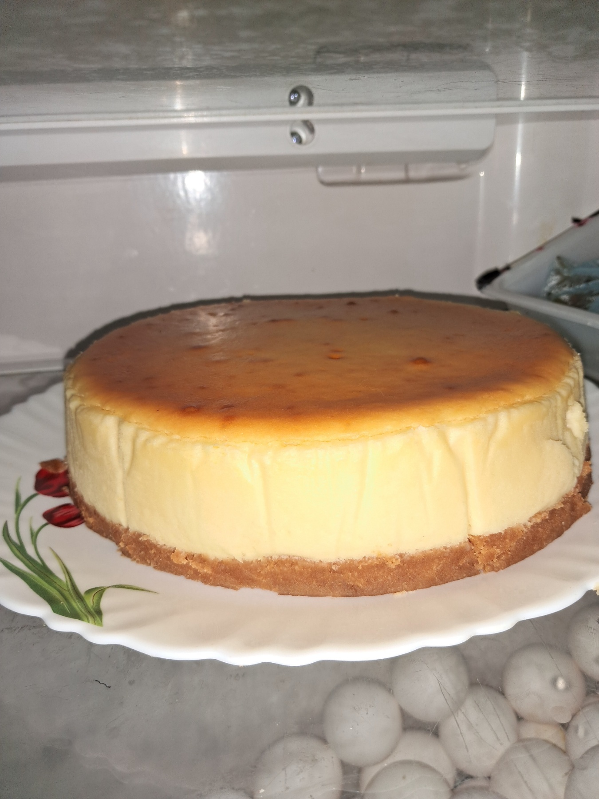
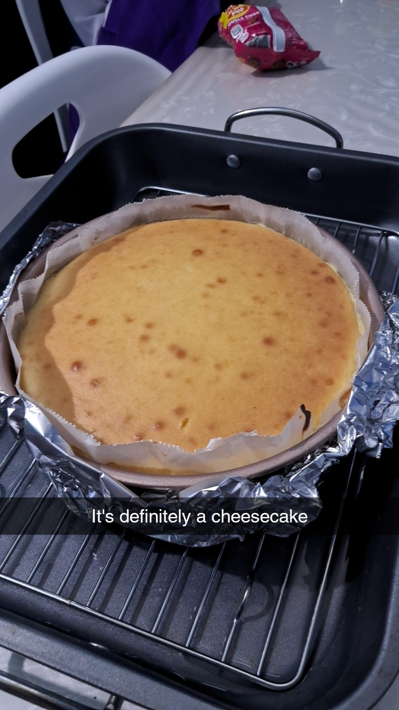

After much discussion and planning and finding, not finding, losing and scavenging of ingredients. We finally had everything (especially the cream cheese), needed to make the cheesecake. This was to satisfy a random craving of razaan and adhuhams, which caused the irumathi bari boys to watch cheesecake making videos at school.
Nevertheless, on this faithfull day at razaans kicthen, adhuahm razaan and also yaaseen combined their powers to make a cheesecake, which we will soon eat insha'Allah.